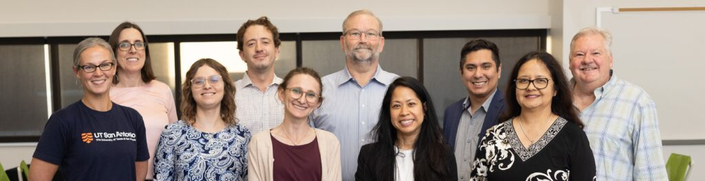

Anthony Francis, Associate Vice President
Commercialization and Innovation
Market Opportunity and Development (MOD)
Using a market-first approach, the MOD Team supports innovation disclosure and up-front market assessment and opportunity prioritization. The MOD Team also oversees select development projects in collaboration with strategic alliance partners.
Robert Graham, MS
E: Robert.Graham@utsa.edu
E: grahamr4@uthscsa.edu
P: (210) 458-8139
Strategic Alliances and Partnerships
The Strategic Alliances and Partnerships role builds and manages relationships with external partners to advance institutional priorities, expand innovation pathways, and support programmatic and commercialization goals through collaboration.
Internal Development
Internal consultant function with in-depth focus and management of several curated projects, with a primary goal of advancing promising innovations to and through commercially-recognized inflection points.
Intellectual Property and Operations
Communications and Marketing
Leads strategic outreach and storytelling efforts that highlight the impact of university innovation, partnerships, and commercialization success. Through engaging content, visual design, and digital communication, this role amplifies faculty achievements, promotes signature programs, and strengthens the university’s innovation brand across internal and external audiences.
Lindsey Dostal
E: dostall@uthscsa.edu
P: (210) 562-4002
Education and Development Programs (Innovation Programs)
Internal consultant function with in-depth focus and management of several curated projects, with a primary goal of advancing promising innovations to and through commercially-recognized inflection points.
Commercialization Workshop
Intended to educate and support innovators from the initial idea stage, helping them understand how to make inventions and research outcomes scale.
Lindsey Dostal
E: dostall@uthscsa.edu
P: (210) 562-4002
Entrepreneur-in-Resident (EiR) Program
OISP’s Entrepreneur-in-Resident (EIR) Program supports faculty in transforming their inventions into market-ready products while allowing them to remain at the University. Researchers benefit from a structured pathway to commercialization, gaining entrepreneurial experience without leaving their academic roles.
Kaitlyn Bloch
E: kaitlyn.bloch@utsa.edu
E: blochk@uthscsa.edu
P: (210) 296-6467
Key Opinion Leaders (KOL) Network
Aligned with the goal of bringing products to market for patient benefit, OISP’s Key Opinion Leader (KOL) network is comprised of individuals with industry/VC experience who can share their subject matter expertise, insights, and perspectives to support UT San Antonio in identifying and enhancing the market opportunity for our technologies.
Kaitlyn Bloch
E: kaitlyn.bloch@utsa.edu
E: blochk@uthscsa.edu
P: (210) 296-6467